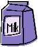

Measuring With Maggie
An Introduction to US Standard Units
Also known as "English Units" or "US Customary Units"

Wow, I just flew in from planet Micron. It was a long flight, but well worth it to get to spend time with you!
My name is Maggie in your language (but you couldn't pronounce my real name!)
When I first arrived I couldn't understand how you measure things, but my friend Tom taught me all about measurement, and I am going to share with you everything he taught me.
The first thing Tom told me was that you can measure things using two different systems: US Standard Units and Metric.
Today is my day to learn US Standard Units !
Liquids
 |
Since it was such a long flight, the first thing I could use is something cold to drink. But I want to be sure how much to ask for! So I can get a drink that is not too big or too small. |
The first thing I need to know when asking for a drink is the types of units used to measure liquids, which are:
- Fluid Ounces
- Cups
- Pints
- Quarts
- Gallons
 |
Fluid Ounces (oz) are small. About how much fits into a small medicine cup ... but that isn't enough for someone who is thirsty! |
| Then Tom showed me a small carton, and told me it held 8 fluid ounces, which is also called 1 cup. But I wanted more! |  |
So Tom showed me a pint, which is equal to 2 cups. That seemed about right for someone who was very thirsty! |
 |
(Tom also told me that I can measure things using measuring cups)
To measure many cups of liquid all put together you can use quarts. A quart (qt) is the same thing as 4 cups or 2 pints. |
 |
If you still need more liquid you may want to switch to using gallons. A gallon (gal) is the same as 16 cups or 8 pints or 4 quarts. It is the largest liquid measurement. (Oh wow! A quart is a quarter of a gallon!) |
 |
So now I know that 1 ounce is too small for me, but 1 gallon is too much. I think I will ask for a pint of juice!
Final thoughts about measuring liquids:
1 Gallon = 4 quarts = 8 pints = 16 cups= 128 fluid ounces

Mass (Weight)
Next I wanted to eat some chocolate ... so I should learn about mass. You often call it "weight", but it is only because of the gravity on your planet that items have weight!
Tom says I need to know:
- Ounces
- Pounds
- Tons
Ounces Again!One thing that really confused me is that when I asked for a drink I could use ounces, but ounces are also used for mass ... ... the same word can be used in two different measuring systems! How amazing is that? But they are really different. |
 |
Tom says:
If you mean an ounce of fluid say "fluid ounce" ("fl oz")
Otherwise ounce usually means mass.
So we are not talking about fluids! I already had a drink. I need to know about mass.
 |
The smallest unit of mass is ounces (oz). A slice of bread is about one ounce. It is very light. |
But when you add up the ounces you get a new label for mass:
|
If you have 16 ounces, it can also be called a pound (lb). Typically, this is the unit that you use to measure your own weight. 1 pound = 16 ounces Pounds are used to measure lots of things from people to food to animals. Tom says he weighs 90 pounds. |
But if something weighs many pounds we use yet another label
2,000 pounds is also one ton. 1 ton = 2,000 pounds That is really heavy! Trucks, ships and heavy equipment are measured using tons instead of pounds. An elephant has a mass of about 8 tons! |
 |
So now I know that 1 ounce of chocolate is too small for me, but 1 ton is way too much. I think I will ask for a pound of chocolate!
Final thoughts about mass:
1 pound = 16 ounces
1 Ton = 2,000 pounds = 32,000 ounces
Length

The last kind of measurement we will explore is length. This is important for lots of different reasons. Measurement of length helps you to know how far you have traveled, how far you have left to travel, how tall you are and many other things.
I need to know about:
- Inches
- Feet
- Yards
- Miles
 |
Small units of length are called inches. The last joint of your finger or thumb is about 1 inch (depending on how big your fingers are!). |
Lots of things are measured in inches from rainfall to paper length.
Measuring in inches gives us a way for everyone to understand the size of something.

When we have 12 inches together, it is known as a foot.
1 foot = 12 inches
A long time ago, people used their feet to measure things. But everyone has different sized feet so it did not work very well.
Using 12 inches put together to make one foot lets everyone have an accurate picture of what exactly a "foot" of length is.

When 3 feet are together, this is called a yard. (This isn't the same thing as a lawn, though they are both referred to as a "yard"!)
1 yard = 3 feet
The length of this guitar is about 1 yard.

When you put together 1,760 yards, you have a mile.
1 mile = 1,760 yards = 5,280 feet
Miles are long distances and are mostly used to measure the distance between places which are far away from each other. Most people refer to miles when they are driving, biking or jogging.
Final thoughts about measuring length:
1 foot = 12 inches
1 yard = 3 feet = 36 inches
1 mile = 1,760 yards = 5,280 feet = 63,360 inches

Temperature
I was feeling a bit hot, so I asked Tom how to measure temperature.
So he showed me a thermometer. But I saw 2 sets of numbers!
Tom explained that a thermometer measures in degrees (°) of either Celsius or Fahrenheit.
"Why two scales?", I asked.
Tom said that some people like one scale and some like the other, and that I should learn both!
He then gave me an example: when water freezes the thermometer shows:
- 0 degrees Celsius on the left side,
- but on the right side it shows 32 degrees Fahrenheit.
Two numbers for the same thing!
He gave me more examples.
- A hot sunny day with a temperature of 30 degrees Celsius is 86 degrees in Fahrenheit.
- Water boils at 100 degrees Celsius or 212 degrees Fahrenheit.
- And you can bake cookies in your oven at a temperature of 180 degrees Celsius, which is 356 degrees Fahrenheit.
I decided to get my own thermometer, so I can learn all about this.
Bye for Now!
|
I hope you enjoyed learning all about measurement. Now I must return home. Keep measuring until I see you again!!!!!!!!! |